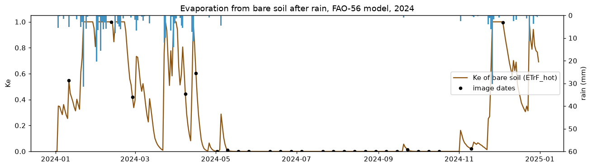
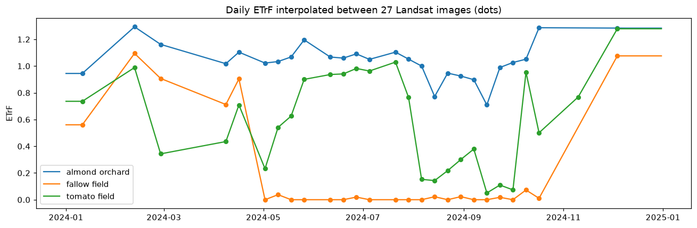
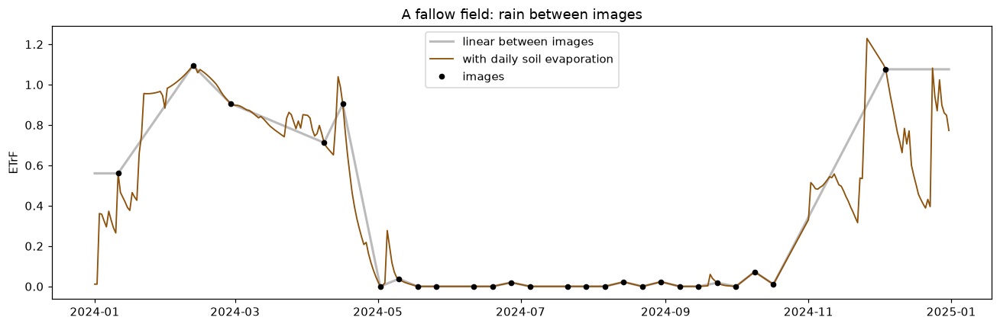
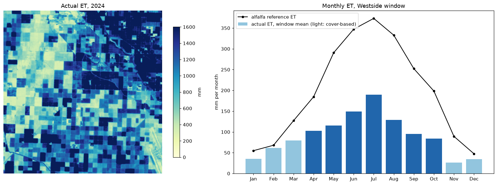
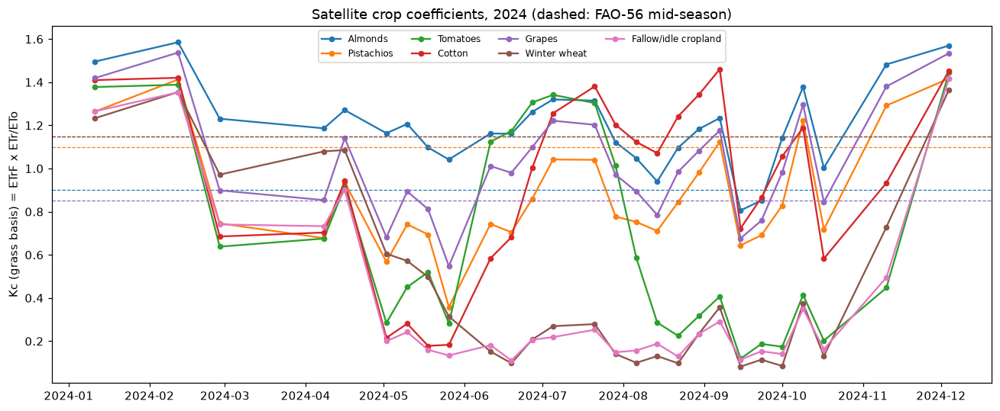

A Landsat energy balance gives ET for the moment of an image and, through the reference ET fraction, for that day. Water managers need months and seasons: how much water an orchard used from April to October, how much a district consumed in a drought year. Between clear images the fraction must be interpolated, and the daily weather carries it to every day. This notebook runs METRIC on every clear Landsat image of 2024 over the Westside San Joaquin Valley, estimates the hot anchor’s evaporation after winter rain with a soil water balance, interpolates ETrF to every day, accumulates monthly and annual ET, and turns the result into crop water use and satellite crop coefficients. It ends by measuring how much the annual total depends on the number of clear images.
Overview
Interpolate the fraction, not ET
ET on any day is the product of the crop’s state (how much leaf area, how wet the soil) and the weather of the day. The crop’s state changes slowly over weeks; the weather changes daily. METRIC therefore interpolates ETrF between images and multiplies by each day’s alfalfa reference ET:
ET_day = ETrF_interpolated(day) x ETr(day), ET_season = sum over days
Interpolating ET itself would carry a hot image day’s ET into a cool cloudy week. Linear interpolation is the usual choice; splines can overshoot after a harvest. Long gaps (winter clouds) make the interpolated fraction unreliable, so the interpolation stops beyond a maximum gap.
The hot anchor after rain
In winter, rain wets bare soil and it evaporates for days. METRIC estimates the hot anchor’s ETrF_hot with the FAO-56 two-stage soil evaporation model, a daily water balance of the top 10 to 15 cm of soil:
Rain refills the evaporating layer (depletion De falls).
While De is below the readily evaporable water REW (stage 1), the surface evaporates at the energy-limited rate, Ke = Ke_max.
Beyond REW (stage 2), evaporation falls linearly to zero at the total evaporable water TEW: Kr = (TEW - De) / (TEW - REW), Ke = Kr Ke_max.
ETrF_hot is the Ke of the image date. In the dry summer it is zero.
Crop coefficients from space
ETrF is a crop coefficient on the alfalfa basis. Multiplying by ETr/ETo puts it on the grass basis used by FAO-56 (Kc = ETrF ETr / ETo), so satellite estimates can be compared with the tabulated values that irrigation districts still use for planning. The satellite values include the actual water management (deficit irrigation, weeds, cover crops, harvest dates), which the tables cannot.
daily ERA5 alfalfa and grass reference ET (notebook 02)
Learning objectives
Explain why ETrF, not ET, is interpolated between images, and what limits the interpolation.
Estimate the hot anchor’s ETrF after rain with the FAO-56 soil evaporation model.
Build a daily ETrF cube from 27 images and accumulate monthly and annual ET.
Compute ET and water volumes per crop, and satellite crop coefficients through the season.
Replace METRIC where it is not reliable (winter) and check the result with a water balance.
Measure how the number of clear images changes the seasonal total.
Data
Dataset
Content
Landsat 8 and 9 C2 L2, 27 scenes of 2024
path 42 row 35, cached by sd.load_scene (notebook 01)
ERA5 daily (Open-Meteo)
rain and the daily alfalfa and grass reference ET of 2024
USDA CDL 2024
crop type of each pixel
The METRIC runs take a few minutes the first time and are cached in outputs/etrf_westside_2024.nc.
Contents
Setup
The hot anchor’s ETrF from a soil water balance
METRIC on every image
Daily ETrF
Rain between images
Winter: where METRIC is not reliable
Monthly and annual ET
Crop water use
Satellite crop coefficients
How many images are enough?
Summary and exercises
Setup
Installation. This notebook needs installation option 5 (core, spatial analysis, spatial statistics, geostatistics and remote sensing): pip install "geolattice[remote-sensing]". See “Installation options” in the GeoLattice README.
Code
import warnings # warning controlwarnings.filterwarnings("ignore") # hide routine library warningsfrom pathlib import Path # file pathsimport matplotlib.pyplot as plt # figuresimport numpy as np # arraysimport pandas as pd # tablesimport rioxarray # noqa: F401 (registers the .rio accessor)import xarray as xr # labelled rastersimport geolattice # GeoLatticeimport geolattice.rsense.surface_energy_balance as seb # energy balance and ET modelsimport seb_data as sd # chapter helper: downloads, caches and loads the scenesplt.rcParams.update({"figure.dpi": 110}) # figure resolutionOUT = Path("outputs") # results written by this chapterOUT.mkdir(exist_ok=True) # create it if neededprint("GeoLattice", geolattice.__version__, "| data folder", sd.DATA.relative_to(sd.DATA.parents[3])) # versions and pathsSITE = sd.WESTSIDE # Westside San Joaquin Valleyref = sd.daily_reference(SITE, "2024-01-01", "2024-12-31") # daily ETr, ETo and rain from ERA5rain = ref["precip"] # mm/dayds0 = sd.load_scene() # one stack for the grid and the crop mapcdl = ds0.cdl # CDL 2024 on the Landsat gridpixel_area =30.0*30.0# m2
GeoLattice 0.3.49 | data folder GeoLattice/Data/08_remote_sensing/08_12_surface_energy_balance
The hot anchor’s ETrF from a soil water balance
The evaporating layer is given a total evaporable water of 25 mm and a readily evaporable water of 9 mm, typical of the clay loams of the Westside (FAO-56 Table 19), and Ke_max = 1.0 on the alfalfa basis. The balance runs daily through 2024 with ERA5 rain and ETr.
Code
def soil_evaporation_ke(rain, etr, tew=25.0, rew=9.0, ke_max=1.0): # FAO-56 two-stage evaporation of bare soil de, out = tew, [] # start dry (fully depleted)for p_, e_ inzip(rain.values, etr.values): # day by day de =max(de - p_, 0.0) # rain refills the layer kr =1.0if de <= rew elsemax((tew - de) / (tew - rew), 0.0) # stage 1 or stage 2 ke = kr * ke_max # evaporation coefficient de =min(de + ke * e_, tew) # evaporation depletes the layer out.append(ke) # Ke of the dayreturn pd.Series(out, index=rain.index) # daily Keke = soil_evaporation_ke(rain, ref["etr"]) # daily Ke of a bare fieldfig, ax = plt.subplots(figsize=(12, 3.5)) # one panelax.plot(ke, color="#8c510a", label="Ke of bare soil (ETrF_hot)"); ax.set_ylabel("Ke"); ax.set_ylim(0, 1.05) # Keax2 = ax.twinx(); ax2.bar(rain.index, rain, color="#4393c3", width=1); ax2.set_ylim(60, 0); ax2.set_ylabel("rain (mm)") # rain from the topdates = [pd.Timestamp(s[17:25]) for s in sd.SEASON_2024] # image datesax.plot(dates, ke.reindex(dates), "ko", ms=4, label="image dates"); ax.legend(loc="center right") # Ke at the imagesax.set_title("Evaporation from bare soil after rain, FAO-56 model, 2024"); plt.tight_layout(); plt.show() # drawetrf_hot = ke.reindex(dates).round(2) # ETrF_hot for each imageetrf_hot[etrf_hot >0].to_frame("ETrF_hot") # images where the hot anchor still evaporates

ETrF_hot
time
2024-01-11
0.55
2024-02-12
1.00
2024-02-28
0.42
2024-04-08
0.44
2024-04-16
0.60
2024-05-10
0.01
2024-09-23
0.01
2024-11-10
0.02
2024-12-04
0.99
After each winter storm the bare soil evaporates at the full rate for a few days and then dries; from May on the hot anchor’s ETrF is zero on every image date. Only the images listed in the table use a non-zero etrf_hot.
METRIC on every image
Each scene goes through the same chain as notebook 06: inputs, automated anchors, overpass and daily reference ET from ERA5, and METRIC with the hot anchor’s ETrF from the balance above. Cloudy pixels are left empty.
Code
cube_path = OUT /"etrf_westside_2024.nc"# cached resultif cube_path.exists(): # reuse earlier runs cube = xr.open_dataset(cube_path).load() # ETrF and vegetation cover, (time, y, x) log = pd.read_csv(OUT /"etrf_westside_2024_log.csv", index_col=0) # calibration logelse: # run METRIC on every scene (a few minutes) layers, covers, rows = [], [], [] # resultsfor sid in sd.SEASON_2024: # every 2024 scene s = sd.load_scene(sid) # cached stack q = sd.energy_inputs(s) # inputs and anchors d = pd.Timestamp(s.attrs["datetime"]).normalize() # image date r = sd.run_metric_scene(s, q, etrf_hot=float(etrf_hot.get(d, 0.0))) # METRIC layers.append(r.etrf.where(q["mask"]).expand_dims(time=[d]).astype("float32")) # ETrF, clouds masked covers.append(seb.fractional_cover(q["ndvi"]).where(q["mask"]).expand_dims(time=[d]).astype("float32")) # vegetation cover rows.append({"date": d.date(), "clear %": round(100*float(q["mask"].mean()), 1), "ETrF_hot": float(etrf_hot.get(d, 0.0)),"cold LST (C)": round(q["anchors"]["cold"]["lst"] -273.15, 1), "hot LST (C)": round(q["anchors"]["hot"]["lst"] -273.15, 1),"ETr24 (mm)": round(q["etr_daily"], 2), "ETrF median": round(float(r.etrf.median()), 3)}) # calibration log cube = xr.Dataset({"etrf": xr.concat(layers, "time"), "fc": xr.concat(covers, "time")}) # (time, y, x) log = pd.DataFrame(rows).set_index("date") # table cube.to_netcdf(cube_path, encoding={v: {"zlib": True, "complevel": 4} for v in cube.data_vars}) # cache log.to_csv(OUT /"etrf_westside_2024_log.csv") # cacheetrf, fc = cube.etrf, cube.fc # the two cubesprint(dict(etrf.sizes)) # 27 imageslog # one row per image
{'time': 27, 'y': 953, 'x': 926}
clear %
ETrF_hot
cold LST (C)
hot LST (C)
ETr24 (mm)
ETrF median
date
2024-01-11
99.9
0.55
9.2
14.1
2.93
0.857
2024-02-12
100.0
1.00
14.0
22.4
2.10
1.112
2024-02-28
100.0
0.42
17.2
29.3
3.14
0.633
2024-04-08
100.0
0.44
16.4
26.4
5.56
0.603
2024-04-16
77.0
0.60
22.2
35.8
4.81
0.848
2024-05-02
100.0
0.00
25.3
41.3
10.34
0.302
2024-05-10
100.0
0.01
29.3
52.1
8.51
0.408
2024-05-18
100.0
0.00
30.3
53.7
8.66
0.392
2024-05-26
100.0
0.00
28.0
51.0
8.67
0.229
2024-06-11
100.0
0.00
35.2
63.0
10.74
0.408
2024-06-19
100.0
0.00
30.7
54.6
10.91
0.386
2024-06-27
100.0
0.00
32.1
55.8
13.65
0.470
2024-07-05
100.0
0.00
35.2
60.0
15.61
0.534
2024-07-21
100.0
0.00
35.4
63.0
13.15
0.527
2024-07-29
100.0
0.00
31.5
53.8
9.89
0.332
2024-08-06
100.0
0.00
34.8
59.8
11.41
0.288
2024-08-14
100.0
0.00
32.8
57.1
10.82
0.269
2024-08-22
100.0
0.00
30.4
51.3
9.16
0.275
2024-08-30
100.0
0.00
31.5
53.2
11.06
0.342
2024-09-07
100.0
0.00
33.4
54.6
11.32
0.408
2024-09-15
100.0
0.00
30.9
51.1
7.79
0.195
2024-09-23
100.0
0.01
33.2
53.3
7.24
0.229
2024-10-01
100.0
0.00
32.0
51.5
7.27
0.206
2024-10-09
100.0
0.00
31.3
46.1
8.34
0.442
2024-10-17
100.0
0.00
26.8
40.1
5.10
0.243
2024-11-10
24.8
0.02
13.8
28.5
3.52
0.681
2024-12-04
99.8
0.99
13.9
20.6
1.08
1.168
Daily ETrF
seb.interpolate_etrf fills each pixel’s days between clear images linearly, stops at gaps longer than 50 days (none exceeds that for most pixels; cloudy pixels of the 10 November image make some longer), and holds the first and last values to the ends of the year.
Code
daily = seb.interpolate_etrf(etrf, start="2024-01-01", end="2024-12-31", max_gap_days=50, extrapolate=True) # (366, y, x)print(dict(daily.sizes), f"| pixel-days without a value: {float(daily.isnull().mean()):.2%}") # coveragepts = {"almond orchard": (193, 25), "fallow field": (206, 193)} # the cold and hot anchors of 5 July as examplespts["tomato field"] =tuple(int(v) for v in np.argwhere((cdl ==54).values & (etrf.sel(time="2024-07-05").squeeze() >0.9).values)[100]) # a well watered tomato pixelfig, ax = plt.subplots(figsize=(12, 4)) # one panelfor name, (iy, ix) in pts.items(): # three pixels line = ax.plot(daily.time, daily[:, iy, ix], lw=1.5, label=name)[0] # interpolated ETrF ax.plot(etrf.time, etrf[:, iy, ix], "o", color=line.get_color(), ms=5) # image valuesax.set_ylabel("ETrF"); ax.legend(); ax.set_title("Daily ETrF interpolated between 27 Landsat images (dots)"); plt.tight_layout(); plt.show() # draw
{'time': 366, 'y': 953, 'x': 926} | pixel-days without a value: 0.01%

The orchard keeps a high ETrF from spring to autumn. The tomato field rises from planting to full cover in early summer and drops at harvest. The fallow field stays low except after winter rains, when its bare soil evaporates. Between images the lines are straight: a harvest that happened a few days after an image appears later and more gradually than it was.
Rain between images
Straight lines between images carry the soil wetness of an image day across the following weeks: an image taken the day after a storm makes every bare field look wet for a month, and a storm between two dry images is missed. METRIC corrects the uncovered part of each pixel with the daily soil evaporation of the FAO-56 balance (Allen et al. 2007). The soil evaporation seen on the image dates is interpolated too, removed, and replaced by the daily value, weighted by the bare fraction 1 - fc:
fc_daily = seb.interpolate_etrf(fc, start="2024-01-01", end="2024-12-31", max_gap_days=50, extrapolate=True, clip=(0, 1)) # daily coverke_img = ke.reindex(pd.DatetimeIndex(etrf.time.values)) # Ke on the image datesdays = pd.date_range("2024-01-01", "2024-12-31") # every day of 2024ke_interp = ke_img.reindex(days.union(ke_img.index)).interpolate("time").ffill().bfill().reindex(days) # Ke as the images see itcorr = xr.DataArray((ke.reindex(days) - ke_interp).values, coords={"time": days}, dims="time") # daily minus interpolated soil evaporationdaily_adj = (daily + (1- fc_daily) * corr).clip(0, 1.3) # adjusted daily ETrFfig, ax = plt.subplots(figsize=(12, 4)) # one paneliy, ix = pts["fallow field"] # the fallow pixelax.plot(daily.time, daily[:, iy, ix], color="#bbbbbb", lw=2, label="linear between images") # beforeax.plot(daily_adj.time, daily_adj[:, iy, ix], color="#8c510a", lw=1.2, label="with daily soil evaporation") # afterax.plot(etrf.time, etrf[:, iy, ix], "ko", ms=4, label="images") # image valuesax.set_ylabel("ETrF"); ax.legend(); ax.set_title("A fallow field: rain between images"); plt.tight_layout(); plt.show() # draw

After the adjustment the fallow field’s ETrF falls back within days of each storm instead of staying high until the next image, and storms between images appear as short pulses. Vegetated pixels change little, because the correction is weighted by their bare fraction. The rest of the notebook uses the adjusted daily ETrF.
Winter: where METRIC is not reliable
The calibration log shows the winter images (January, February, November and December) with anchors only 5 to 8 K apart and a daily alfalfa reference ET of 1 to 3 mm. On those dates METRIC gives nearly every pixel, fallow land included, a fraction close to or above 1 (the crop coefficient section below lists them). With so little contrast the calibration is poorly constrained, and wet soil after rain makes both anchors evaporate. Operational METRIC work in California concentrates on the growing season for this reason. From November to March this notebook uses a cover-based coefficient instead, in the spirit of SIMS: green cover transpires at the reference rate, bare soil evaporates as the FAO-56 balance allows.
ETrF_off(day) = 0.95 fc(day) + (1 - fc(day)) Ke(day), from November to March
Monthly and annual ET
Each day’s fraction times that day’s ETr, summed by month and over the year. Three versions of the annual total show the effect of each step.
Code
ke_da = xr.DataArray(ke.reindex(days).values, coords={"time": days}, dims="time") # daily Ke as a DataArrayoff = (daily_adj.time.dt.month <=3) | (daily_adj.time.dt.month >=11) # November to Marchetrf_off = (0.95* fc_daily + (1- fc_daily) * ke_da).clip(0, 1.05) # cover-based coefficientfinal = xr.where(off, etrf_off, daily_adj) # METRIC April to October, cover-based in winteretr_series = ref["etr"] # daily alfalfa reference ET, mmannual_linear = seb.seasonal_et(daily, etr_series) # linear ETrF onlyannual_rain = seb.seasonal_et(daily_adj, etr_series) # with the rain adjustmentannual = seb.seasonal_et(final, etr_series) # with the winter replacement as wellmonthly = seb.seasonal_et(final, etr_series, freq="MS") # mm per monthseason = seb.seasonal_et(daily_adj, etr_series, start="2024-04-01", end="2024-10-31") # METRIC irrigation seasonprint(f"window mean annual ET: linear {float(annual_linear.mean()):.0f} mm, rain adjusted {float(annual_rain.mean()):.0f} mm, "f"winter replaced {float(annual.mean()):.0f} mm") # effect of each stepprint(f"April to October (METRIC) {float(season.mean()):.0f} mm | alfalfa reference {etr_series.sum():.0f} mm | rain {rain.sum():.0f} mm "f"({rain.loc['2024-04':'2024-10'].sum():.0f} mm from April to October)") # totalsfig, ax = plt.subplots(1, 2, figsize=(15, 5.5), gridspec_kw={"width_ratios": [1, 1.2]}) # map and barsim = ax[0].imshow(annual, cmap="YlGnBu", vmin=0, vmax=1600); plt.colorbar(im, ax=ax[0], shrink=0.8, label="mm") # annual ET mapax[0].set_title("Actual ET, 2024"); ax[0].axis("off") # titlemm = monthly.mean(["y", "x"]).to_series() # window mean per monthax[1].bar(mm.index.strftime("%b"), mm.values, color=np.where(mm.index.month.isin([1, 2, 3, 11, 12]), "#92c5de", "#2166ac"), label="actual ET, window mean (light: cover-based)") # monthly ETax[1].plot(mm.index.strftime("%b"), etr_series.resample("MS").sum().values, "k-o", ms=4, label="alfalfa reference ET") # referenceax[1].set_ylabel("mm per month"); ax[1].legend(); ax[1].set_title("Monthly ET, Westside window") # labelsplt.tight_layout(); plt.show() # draw
window mean annual ET: linear 1198 mm, rain adjusted 1167 mm, winter replaced 1102 mm
April to October (METRIC) 865 mm | alfalfa reference 2366 mm | rain 320 mm (38 mm from April to October)

The rain adjustment lowers the window’s annual mean from 1,198 to 1,167 mm and the winter replacement to 1,102 mm. Most of the ET happens from May to September, when the orchards and summer crops are at full canopy, and it stays well below the alfalfa reference because much of the window is fallow or harvested for part of the year.
Crop water use
seb.zonal_et groups the annual ET by CDL class and converts depths to volumes with the pixel area. One acre-foot is 1,233.5 m3.
Code
use = seb.zonal_et(annual, cdl, names=sd.CDL_NAMES, pixel_area=pixel_area, min_count=5000) # per crop classuse["annual, linear only (mm)"] = seb.zonal_et(annual_linear, cdl, pixel_area=pixel_area, min_count=5000)["mean_mm"] # before both adjustmentsuse["season Apr-Oct (mm)"] = seb.zonal_et(season, cdl, pixel_area=pixel_area, min_count=5000)["mean_mm"] # irrigation seasonuse["volume (thousand acre-feet)"] = use.volume_m3 /1233.5/1000# US unitsprint(f"total for the window: {annual.sum().item() /1000* pixel_area /1e6:.0f} million m3 "f"({annual.sum().item() /1000* pixel_area /1233.5/1000:.0f} thousand acre-feet) over {annual.notnull().sum().item() * pixel_area /1e4:,.0f} ha") # total volumefallow_et =float(annual.where(cdl ==61).mean()) # unirrigated fallow land, mmprint(f"water balance check: fallow land ET {fallow_et:.0f} mm against {rain.sum():.0f} mm of rain "f"({float(season.where(cdl ==61).mean()):.0f} mm of it from April to October, when {rain.loc['2024-04':'2024-10'].sum():.0f} mm fell)") # plausibilityuse[["name", "area_ha", "annual, linear only (mm)", "mean_mm", "p10_mm", "p90_mm", "season Apr-Oct (mm)", "volume (thousand acre-feet)"]].round(1) # table
total for the window: 875 million m3 (709 thousand acre-feet) over 79,423 ha
water balance check: fallow land ET 575 mm against 320 mm of rain (357 mm of it from April to October, when 38 mm fell)
name
area_ha
annual, linear only (mm)
mean_mm
p10_mm
p90_mm
season Apr-Oct (mm)
volume (thousand acre-feet)
zone
204
Pistachios
14583.2
1380.7
1291.5
634.9
1771.9
1056.4
152.7
61
Fallow/idle cropland
13113.4
671.9
574.9
379.2
796.2
356.6
61.1
75
Almonds
7310.4
1871.2
1755.9
736.3
2283.2
1477.0
104.1
54
Tomatoes
7142.8
1272.2
1157.1
1010.4
1314.3
962.6
67.0
69
Grapes
4987.0
1679.0
1559.2
1158.3
1871.8
1319.0
63.0
176
Grassland/pasture
4480.6
801.7
740.2
394.8
1178.6
490.1
26.9
24
Winter wheat
4402.1
854.4
779.2
462.9
1143.8
519.1
27.8
2
Cotton
3697.6
1526.5
1407.9
1155.2
1620.9
1195.3
42.2
208
Garlic
1706.5
1120.6
1020.6
825.6
1204.5
782.0
14.1
122
Developed, low intensity
1680.1
978.3
874.9
469.9
1319.9
656.2
11.9
121
Developed, open space
1542.7
970.8
885.4
484.6
1351.9
651.2
11.1
51
Chickpeas
1503.2
1158.2
1053.3
801.5
1217.2
826.0
12.8
21
Barley
1479.3
816.3
751.2
397.3
1064.3
491.9
9.0
123
Developed, medium intensity
1423.6
979.1
870.5
486.5
1297.8
654.1
10.0
1
Corn
1411.6
1638.8
1527.3
1265.1
1763.3
1282.3
17.5
37
Other hay
1370.7
509.9
442.9
355.3
591.1
193.8
4.9
22
22
1145.8
1220.0
1134.2
942.6
1294.1
866.1
10.5
4
4
926.0
1560.7
1483.9
1268.9
1691.7
1191.8
11.1
205
205
851.0
1334.6
1258.0
895.0
1776.0
973.1
8.7
36
Alfalfa
764.3
1625.5
1582.9
1044.6
1932.7
1264.8
9.8
227
Lettuce
585.4
996.1
906.6
742.8
1054.5
660.9
4.3
49
Onions
492.5
1199.0
1079.3
826.0
1250.9
877.9
4.3
Pistachios and almonds use the most water in total, because they cover the largest area and keep their canopy all season. Per hectare, almonds, grapes, cotton and alfalfa use the most over the April to October season (1,250 to 1,500 mm), pistachios and tomatoes about 1,000 mm. The spread between the 10th and 90th percentiles within each crop shows how much management varies from field to field; it is what makes field-scale ET useful for water accounting.
The water balance check is a warning. Fallow land is not irrigated, so over a year its ET cannot exceed the rain (320 mm) by much; yet it gets 575 mm, and 357 mm of that between April and October, when only 38 mm of rain fell. METRIC gives typical fallow fields an ETrF of about 0.15 to 0.2 in summer, because they are a little cooler than the hot anchor, and multiplied by a reference ET of 10 to 15 mm a day that small fraction adds up. The orchard totals are also higher than the 1,100 to 1,400 mm a year often quoted for mature, fully irrigated almonds in the San Joaquin Valley. Two causes act on every pixel: the ERA5 reference ET is not corrected for aridity (notebook 02 put that effect at up to 12 %), and the 1.05 cold anchor in an advective heat wave. Notebook 11 turns the fallow check into a bias estimate and asks which model and reference ET choices bring the totals down.
Satellite crop coefficients
The median ETrF of each crop on each image date, converted to the grass basis with that day’s ETr/ETo, gives a seasonal crop coefficient curve. The dashed lines are approximate mid-season values from FAO-56 Table 12 for standard, well watered conditions.
Code
CROPS = {75: "Almonds", 204: "Pistachios", 54: "Tomatoes", 2: "Cotton", 69: "Grapes", 24: "Winter wheat", 61: "Fallow/idle cropland"} # crops to followFAO_MID = {"Almonds": 0.90, "Pistachios": 1.10, "Tomatoes": 1.15, "Cotton": 1.15, "Grapes": 0.85, "Winter wheat": 1.15} # approximate FAO-56 Kc mid (grass basis)ratio = (ref["etr"] / ref["eto"]).reindex(etrf.time.values) # ETr/ETo on each image datekc = pd.DataFrame({name: [float(etrf.sel(time=t).where(cdl == code).median()) * ratio.loc[t] for t in etrf.time.values]for code, name in CROPS.items()}, index=pd.DatetimeIndex(etrf.time.values)) # satellite Kc per crop and datefig, ax = plt.subplots(figsize=(12, 5)) # one panelfor name in CROPS.values(): # every crop line = ax.plot(kc.index, kc[name], "o-", ms=4, label=name)[0] # satellite Kcif name in FAO_MID: # tabulated value ax.axhline(FAO_MID[name], color=line.get_color(), ls="--", lw=0.8) # FAO-56 mid-seasonax.set_ylabel("Kc (grass basis) = ETrF x ETr/ETo"); ax.legend(ncol=4, fontsize=8); ax.set_title("Satellite crop coefficients, 2024 (dashed: FAO-56 mid-season)") # labelsplt.tight_layout(); plt.show() # drawpeak = kc.loc["2024-06-15":"2024-08-15"].median() # mid-season median for the summer crops and orchardspeak["Winter wheat"] = kc.loc["2024-04-01":"2024-04-30", "Winter wheat"].median() # wheat peaks in Aprildisplay(kc.loc[["2024-01-11", "2024-02-12", "2024-12-04"]].round(2)) # winter images: METRIC fractions near or above 1 everywherepeak.round(2).to_frame("satellite Kc, mid-season").assign(FAO_56_mid=pd.Series(FAO_MID)) # comparison

Almonds
Pistachios
Tomatoes
Cotton
Grapes
Winter wheat
Fallow/idle cropland
2024-01-11
1.50
1.26
1.38
1.41
1.42
1.23
1.26
2024-02-12
1.58
1.41
1.39
1.42
1.54
1.35
1.35
2024-12-04
1.57
1.42
1.44
1.45
1.53
1.36
1.42
satellite Kc, mid-season
FAO_56_mid
Almonds
1.16
0.90
Pistachios
0.78
1.10
Tomatoes
1.17
1.15
Cotton
1.12
1.15
Grapes
0.98
0.85
Winter wheat
1.08
1.15
Fallow/idle cropland
0.19
NaN
The growing season curves behave as expected: tomatoes rise to a peak in early July and fall at harvest in August, cotton peaks in late summer, winter wheat peaks in April and drops to the fallow level after harvest. The winter images show the problem discussed above: every class, fallow land included, has a coefficient of 1.2 to 1.6.
Against FAO-56, tomatoes (1.17 against 1.15), cotton (1.12 against 1.15) and winter wheat (1.08 against 1.15) agree closely. Almonds (1.16) are above the FAO-56 value for orchards without ground cover (0.90) and close to the peak coefficients near 1.1 to 1.2 reported for mature, fully irrigated almonds in California. Pistachios (0.78 against 1.10) are well below, consistent with the regulated deficit irrigation that is common in pistachios and the many young orchards on the Westside. Grapes (0.98 against 0.85) are above. The tables describe pristine, fully watered fields; the satellite sees actual practice.
How many images are enough?
Landsat 8 alone visits every 16 days. Keeping every other image of the April to October season simulates that, and the difference in seasonal ET measures what a sparser record costs.
Code
grow = etrf.sel(time=slice("2024-04-01", "2024-10-31")) # the 22 growing season imagesrows = {} # one row per experimentfor name, sel in [("all season images", slice(None)), ("every other image (1st, 3rd, ...)", slice(0, None, 2)), ("every other image (2nd, 4th, ...)", slice(1, None, 2)), ("every fourth image", slice(0, None, 4))]: # experiments sub = grow.isel(time=sel) # chosen images d_ = seb.interpolate_etrf(sub, start="2024-04-01", end="2024-10-31", max_gap_days=None, extrapolate=True) # daily ETrF s_ = seb.seasonal_et(d_, etr_series) # season ET, without the rain adjustment (little rain in this season)if name =="all season images": # the reference base = s_ # all images diff = s_ - base # against all images rows[name] = {"images": sub.sizes["time"], "window mean (mm)": float(s_.mean()), "mean difference (mm)": float(diff.mean()),"pixels changed by more than 100 mm (%)": 100*float((np.abs(diff) >100).sum() / diff.notnull().sum())} # summarypd.DataFrame(rows).T.round(1) # table
images
window mean (mm)
mean difference (mm)
pixels changed by more than 100 mm (%)
all season images
22.0
868.7
0.0
0.0
every other image (1st, 3rd, ...)
11.0
899.1
30.4
2.7
every other image (2nd, 4th, ...)
11.0
847.4
-21.3
2.7
every fourth image
6.0
922.6
53.9
17.0
Halving the number of images changes the window mean only a little, because the errors of individual fields partly cancel, but a share of pixels changes by more than 100 mm in a season: fields whose planting or harvest fell between the remaining images. With every fourth image the damage grows. Field-scale water accounting needs every clear image, which is why Landsat 8 and 9 together, and Sentinel-2 with sharpened thermal data (notebook 09), are valuable.
The annual ET map and the daily cube are saved for notebooks 11 and 12.
Code
annual.rename("et_2024").to_netcdf(OUT /"annual_et_westside_2024.nc") # annual ET, mmprint(OUT /"annual_et_westside_2024.nc") # path
outputs/annual_et_westside_2024.nc
Summary and exercises
METRIC on 27 Landsat images of 2024, interpolated in ETrF and multiplied by daily ERA5 alfalfa reference ET, gives daily, monthly and annual ET for every 30 m pixel.
The FAO-56 soil evaporation model gives the hot anchor’s ETrF after rain and, applied between images, keeps wet-soil evaporation from being carried across dry weeks.
On winter images METRIC’s fraction is not meaningful (coefficients of 1.2 to 1.6 for every class); a cover-based coefficient replaced it from November to March.
Satellite crop coefficients matched FAO-56 for tomatoes, cotton and wheat, exceeded it for almonds and grapes, and were far below for pistachios.
A water balance check exposed a positive bias over dry land: fallow fields got 357 mm of ET in a season with 38 mm of rain. Orchard totals are also on the high side.
With every other season image, 2.7 % of pixels changed by more than 100 mm; with every fourth, 17 %.
Exercises
Recompute the season with the humidity-adjusted ETr of notebook 02 (etr_humidity_adjusted). How much of the orchard excess does it remove?
Replace ERA5 ETr with the gridMET ETr saved in notebook 02 (etr_gridmet). How much does the annual total change, and does the crop ranking change?
Compute water use per field instead of per crop: polygonize the CDL tomato fields (geolattice.raster has a polygonize tool) and pass the polygons to seb.zonal_et.
Change TEW and REW of the soil evaporation model to those of a sandy loam (20 and 7 mm). Which winter images change?